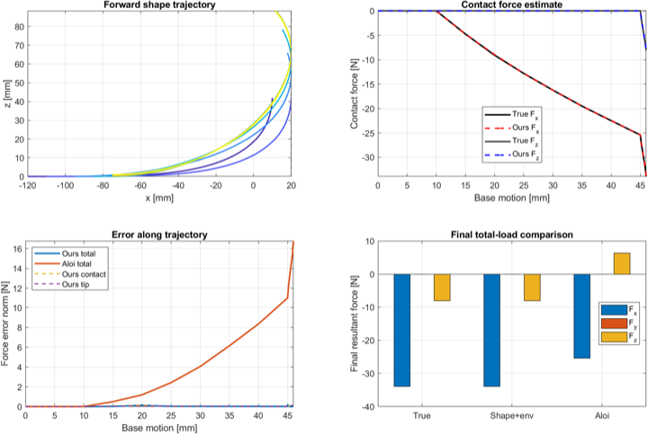
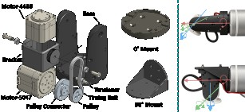
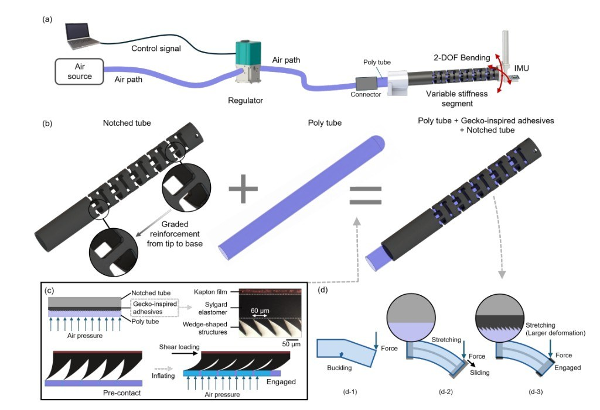
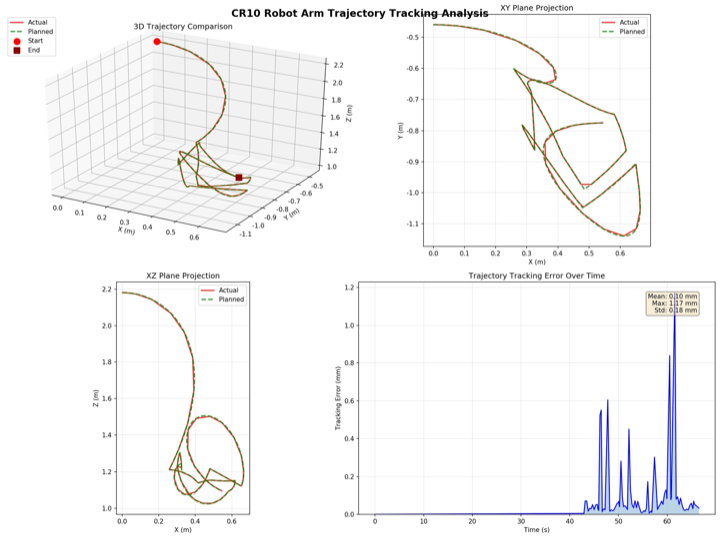
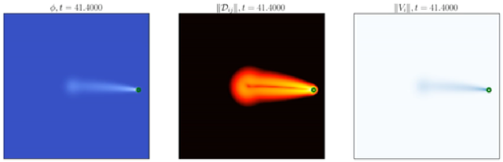
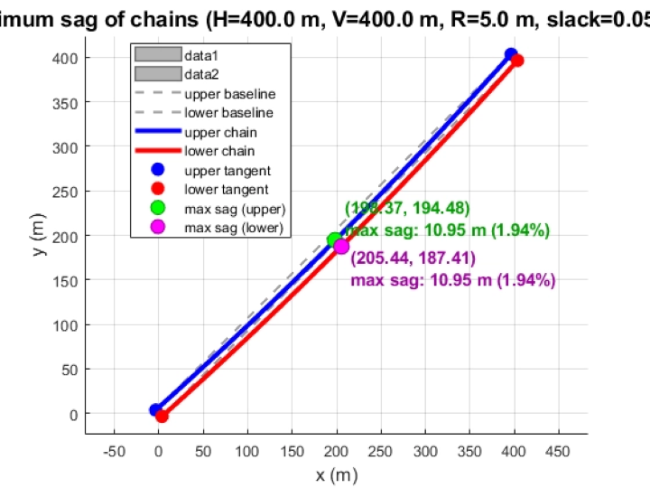

|
Tongyu (Tory) Wang I am a senior undergraduate at the University of Science and Technology of China (USTC), majoring in Theoretical and Applied Mechanics with a minor in Computer Science. I work at the intersection of mechanics, sensing, and computation, with a focus on medical and continuum robotics, force inference, physics-based simulation, and Sim2Real control. I am seeking PhD opportunities in robotics, mechanics, and related areas. |

|
ResearchI am interested in bio-inspired and medical robotics, mechanism design, intelligent control, and physics-based simulation. My projects combine analytical models, numerical simulation, estimation, and hardware prototyping. Some projects are highlighted. |
|
 |
Shape-Environment Fusion for Continuum-Robot Force Sensing
Tongyu Wang Georgia Institute of Technology, 2026 A method for inferring distributed contact forces from robot shape and environmental constraints. The work combines Coulomb-friction contact in a Cosserat-rod model with constrained EKF/MAP estimation, fusing FBG shape sensing and vision in a closed-loop simulation and validation pipeline. |
|
 |
RuggedizedWrist: Distal Mobility for Contact-Rich Tool Use
Tongyu Wang Stanford Biomimetics and Dexterous Manipulation Lab, Summer 2026 code / lab profile A compact two-degree-of-freedom wrist for a Flexiv Rizon 4s. The project spans mechanical design, Isaac Lab comparison of 7- and 9-DoF manipulators, WebXR teleoperation, and tactile-vision sensing with a CoinFT sensor and an optical silicone dome. |
|
 |
Air-Gecko: Variable-Stiffness Haptic Control for Continuum Manipulators
Tongyu Wang Stanford Biomimetics and Dexterous Manipulation Lab, Summer 2026 manuscript A haptic controller for medical continuum robots that is kinematically similar to the manipulator itself. The device combines a positive-pressure poly tube, an elastic notched tube, and gecko-inspired adhesive interlayer jamming, reaching 374.1% of the zero-pressure stiffness at 30 kPa. In a teleoperation user study, participants identified three discrete stiffness levels with 74.7% accuracy and distinguished high- versus low-stiffness contact during multidirectional palpation with 81.9% accuracy. |
|
 |
Sim2Real Control for Magnetic Robotic Intervention
Tongyu Wang Soft Mechanics and Robotics Lab, USTC, Oct 2025 - present Undergraduate Researcher ROS/Gazebo workflows for a magnetic robotic arm, PRM* motion planning with Cartesian interpolation, and continuum-robot simulations in SOFA. Current work studies reinforcement-learning transfer from simulation to a physical system for vascular intervention. |
|
 |
Active Drops in Surfactant Systems
Tongyu Wang Physics of Fluids Lab, University of Twente, Jul 2025 - Sep 2025 Visiting Research Student, advised by Prof. Corinna Maass / lab profile High-Péclet-number transitions in active drops. I implemented multiphase CFD simulations in C++ with Basilisk and used Python to analyze results, evaluate governing equations, and verify reduced physical models. |
|
 |
Mechanics of Slope-Based Gravity Energy Storage
Tongyu Wang Gravitas Energy, Sep 2025 - present Research Intern Unequal-height catenary models and numerical solvers for slack and sag in mountain-slope cyclic transmission systems. The work supports mechanical analysis and layout optimization for long-distance, high-load energy storage infrastructure, and led to the patent outputs below. |
PatentsPatent outputs from gravity-energy-storage research at Gravitas Energy. One invention patent has been granted; two applications remain pending. These are research outputs, not peer-reviewed articles. |
|
Heavy-Load Gravity Energy Storage System
Yu Zhang, Tongyu Wang, Xiaohan Tang Chinese invention patent, granted 2026-06-26 ZL 2025 1 1746905.8 |
|
Mountain-Based Gravity Energy Storage System
Yu Zhang, Tongyu Wang, Xiaohan Tang Chinese invention patent application, substantive examination 202511765995.5 |
|
Gravity Energy Storage Transmission System and Gravity Energy Storage System
Yu Zhang, Tongyu Wang Chinese utility model patent application, accepted 2025-12-02 202522556214.3 |
Education |

|
University of Science and Technology of China
Undergraduate Student
2023.09 - 2027.07
B.Sc. in Theoretical and Applied Mechanics, with a minor in Computer Science.
|

|
Stanford University
Visiting Researcher, BDML
2026.06 - 2026.08
UGVR program at the Biomimetics and Dexterous Manipulation Lab.
|

|
University of Twente
Exchange Student
2025.07 - 2025.09
Visiting research exchange at the Physics of Fluids Lab.
|

|
Gravitas Energy
Research Intern
2025.09 - Present
Research on slope-based gravity energy storage mechanisms.
|
|
This website is based on Jon Barron's template. Last updated September 2026. |